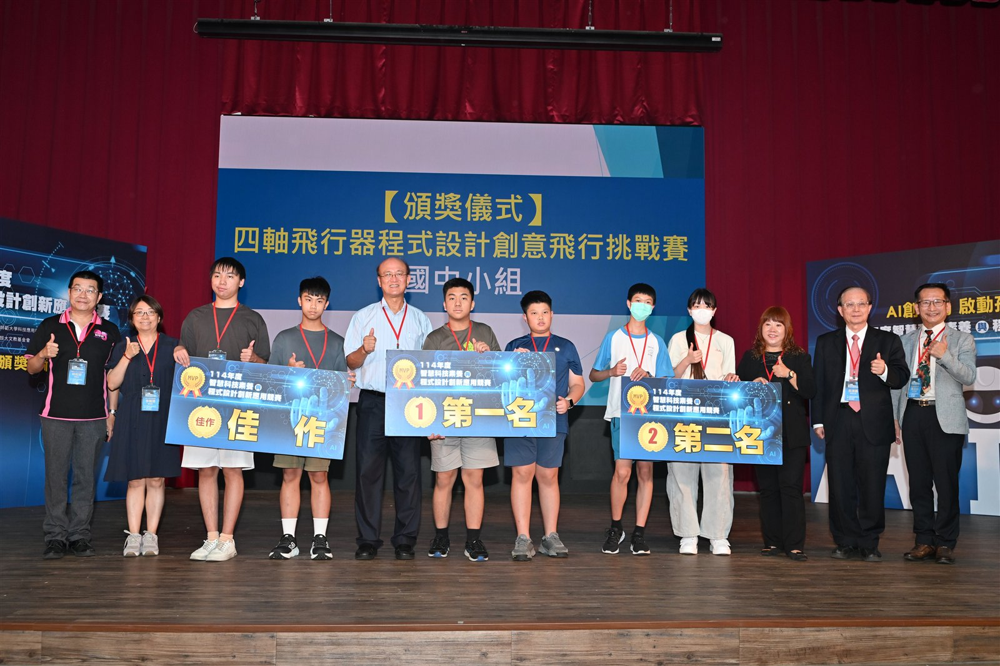
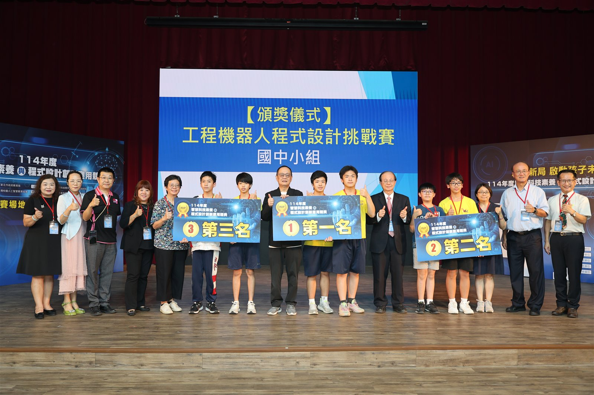
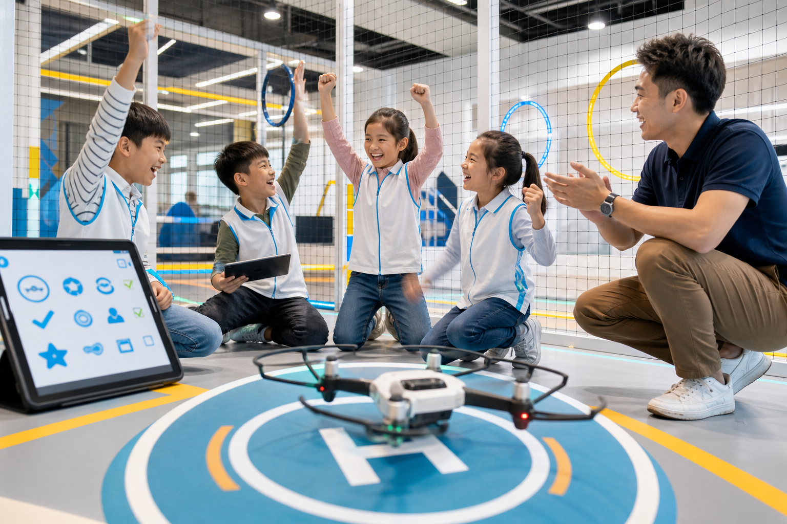
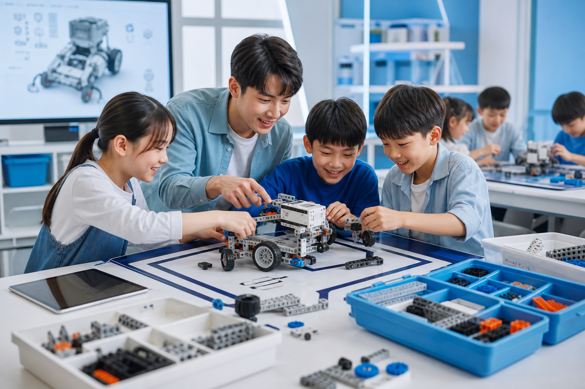
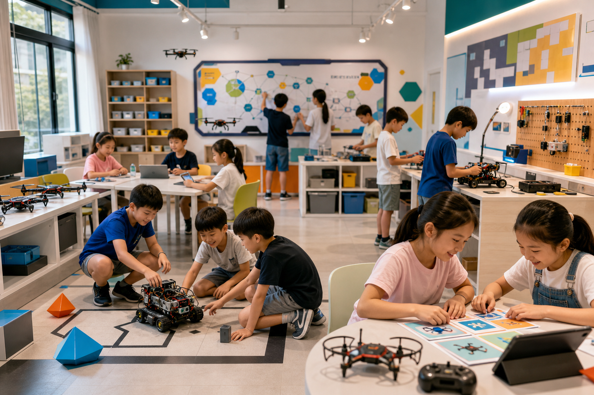
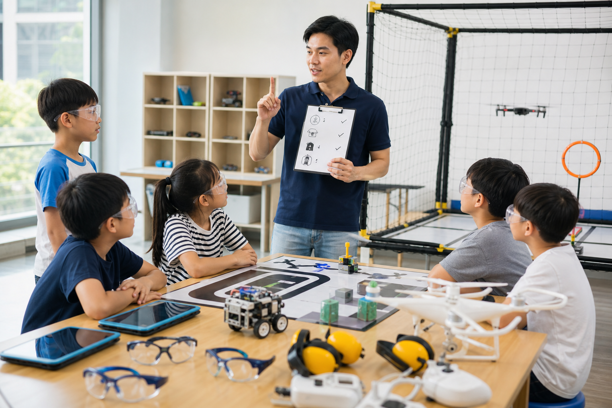
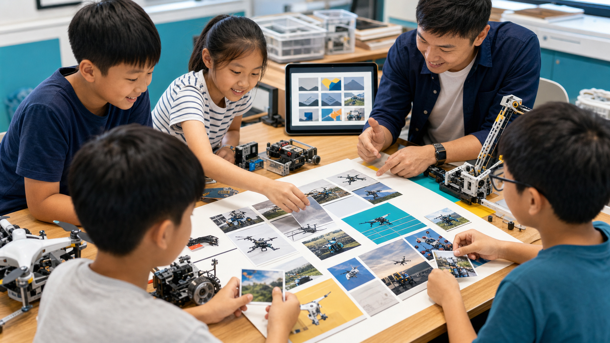

國小起，AI 學習全面啟動！
您的孩子準備好了嗎？
教育部以「AI 人才方舟計畫」從中小學建構 AI 學習環境、充實數位教材與新一代學習系統；臺北市推出涵蓋國小、國中及高中職的生成式 AI 教材，新北市也完成三、五年級《AI智慧大冒險》並配送全市公立國小。 當政策、教材與課堂同步啟動，AI 已不再只是課外興趣，而是孩子面對未來不可缺少的學習能力。
官方資料： 教育部 AI 人才方舟計畫、 臺北市生成式 AI 教材、 新北市 AI 智慧大冒險教材。
創意走廊長期深耕國中小科技教育，專注於生成式 AI、AI 機器人、無人機及程式設計，透過營隊、常態課程與競賽培訓，陪伴孩子從基礎啟蒙走向創意實作。
多年來，我們持續帶領學生參加由教育部、新北市教育局、臺北市教育局及桃園市教育局指導的官方競賽，締造連續五年獲獎的優異實績，累積豐富的教學經驗與完整的競賽培訓系統。
不只完成課堂任務，更能站上正式競賽舞台接受評審檢驗；從程式設計、機器人到飛行器任務，累積能被看見的成果。
大型科技競賽吸引超過 500 隊參與並獲新聞報導，讓孩子在更具挑戰性的舞台驗證學習成果。

無人機程式飛行結合飛行安全、航線規劃與程式控制，學生於四軸飛行器競賽中展現穩定操作及臨場修正能力。

機器人程式設計學生以程式邏輯、機構控制與現場解題能力完成競賽任務，於國中小組頒獎典禮接受表揚。
短期營隊聚焦創意整合，假日常態班累積控制與工程能力；兩條路線都以 AI 機器人實作為核心。
我們相信「作品是最好的實力證明」。這裡展示了學員在不同課堂和任務中所創造的精彩成果。
學員運用多種生成式 AI 工具與詳細提示詞技巧，完成極富幻想色彩的未來城市圖畫，並設計了配套故事劇本。

[ 創作者: 張*恩 (小五) ]編程控制無人機起飛，安全越過高難度多重環形障礙，精準完成三維航線，最終精確降落在物資投遞標誌中心。

[ 創作者: 陳*安 (小四) ]學員獨立調試傳感器探測範圍，優化防卡牆逃逸演算法，使自走車能在沒有遙控的條件下，自主避障脫困。
我們深知家長在為孩子挑選科技培訓課程時的諸多考量，因此我們在設計上實現了多層次的貼心規劃。



課程採分級設計，從圖形化操作、任務闖關與實作體驗開始，適合零基礎孩子。專業老師會手把手耐心帶領，確保每個孩子都能順利跟上進度並建立興趣。
我們極力避免盲目的遊戲化。每堂課都結合明確的物理概念與程式邏輯，搭配豐富的操作練習。確保孩子在愉快玩耍的同時，帶走扎實的程式思維知識。
拒絕聽過就忘！孩子在每學期結束後都將親自完成一套 AI 創作繪本、無人機精準軌道任務或實體機器人，形成具象的學習履歷，讓家長隨時能為之驕傲。
這不止是興趣，更能實踐未來規劃。我們的課程體系緊密對接多項知名科技大賽、科學展覽。能為孩子累積亮眼的作品集、結業證書，極大提升未來競爭力。
我們擁有長期深耕 AI 教育、高規格競賽輔導的團隊，重視安全防範、熱情引導與孩子自尊自立。
台灣大學資訊工程博士、10年高校人工智慧教授經驗。熱愛將高深演算法化繁為簡，轉化為少兒理解的科學探索。
民航局持證專業無人機飛行教官、曾指導中學生代表隊在全省無人機編程穿越挑戰大賽中榮獲冠軍。
知名硬體實驗室開源專案維護者，5年機器人硬體與 Arduino 編程一線教學經歷。特別受孩子喜愛。
曾任跨國廣告創意設計總監。精通 Midjourney、Stable Diffusion 等圖像生成工具，重視孩子的美學表達。
看看已經參與我們課程的家長與學生的切身感受，正是他們的信任，推動我們不斷精進。
「孩子原本對程式一點興趣都沒有，甚至覺得那是枯燥的英文字。沒想到透過無人機任務，他開始在紙上畫航線圖，甚至主動思考怎麼寫迴圈來飛出一個完美的圓。這種主動性真的讓我喜出望外！」
「課程絕不只是買個昂貴的玩具回家。教練在課堂中極致細節地引導孩子一步步理解邏輯與超音波障礙原理。每次成功完成迷宮，孩子眼中的那種自豪感，是平常電子遊戲無法帶來的真材實感。」
「生成式 AI＋AI 機器人營隊讓我的孩子大開眼界！本來擔心這年紀接觸 AI 是不是太早，但老師注重啟迪提問思維，不僅幫助孩子將腦中天馬行空的想法變成圖像，也真的設計出機器人的動作與任務！」
我們整理了家長最常諮詢的十個問題，希望能協助您更加清晰地了解課程的方方面面。
選擇主題營隊或假日常態班，留下資料後由課程顧問協助確認適合梯次。
感謝您完成表單，我們已收到您的課程諮詢，將儘快與您聯繫，協助安排最適合孩子的 AI 科技課程。